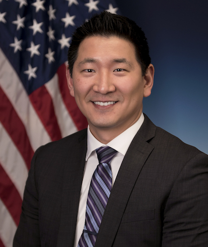
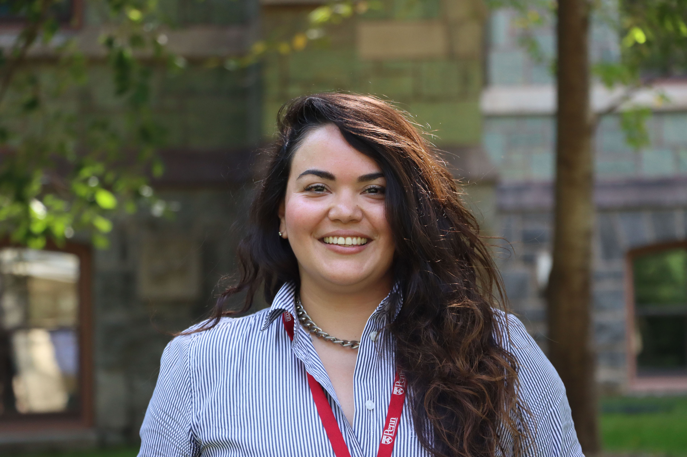
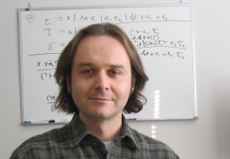

Accepted Workshop
Multi-Robot Systems at Scale: Challenges and Opportunities
A half-day IROS 2026 workshop bringing together researchers and practitioners to identify the scientific and engineering barriers to robust, scalable multi-robot systems.
What This Workshop Is About
Multi-Robot Systems (MRS) have seen real-world success across academia (such as DARPA Sub-T and OFFSET programs) and in industry, including Amazon and Serve Robotics. Recently, MRS research has reached an inflection point: Do we still need to constrain problems to decentralized settings? How can machine learning be effectively leveraged with multiple embodied agents? What role should humans play in multi-robot teams? Up to this point, MRS research has produced a rich body of algorithms and theoretical results, however, unified system-level solutions are still necessary for large-scale, reliable deployments outside highly structured domains. This half-day workshop aims to examine why this gap persists and what research directions are required to close it. In this workshop, we convene leading researchers and practitioners to reflect on the history of MRS, assess the current state of the field, and identify the scientific and engineering challenges that must be addressed to enable robust, scalable multi-robot systems in real-world environments. Speakers and panelists have been specifically selected for their willingness to offer a critical, evidence-based perspective on the future of MRS. The workshop will begin with 2 short invited talks tracing the historical development of MRS and examining the applicability of recent advancements. These will set the stage for a moderated panel of 4-5 leaders from academia and industry, discussing unresolved bottlenecks and potential breakthroughs over 5-, 10-, and 15-year horizons. Structured breakout groups will then focus on 3-5 themes, identifying key barriers and concrete milestones for progress. The workshop will conclude with a synthesis session, and organizers will distill the discussions into a publicly available MRS Research Roadmap summarizing key challenges and benchmarks.
Invited Speakers
The invited talks will ground the discussion in both long-running MRS research questions and the realities of deploying autonomy at scale.
Dr. Ani Hsieh
Associate Professor in the Department of Mechanical Engineering and Applied Mechanics (MEAM), and Associate Director of the General Robot Sensing and Perception (GRASP) Lab at the University of Pennsylvania

Dr. Tim Chung
General Manager Autonomy and Robotics at Microsoft, former DARPA Program Manager
Panel Discussion
The panel will connect academic perspectives with industry deployment experience, focusing on what has to change for MRS research to scale beyond controlled settings.
Dr. Jiaoyang Li
Assistant Professor at Carnegie Mellon University Robotics Institute

Dr. Nadia Figueroa
Shalini and Rajeev Misra Presidential Assistant Professor in the Mechanical Engineering and Applied Mechanics (MEAM) Department at the University of Pennsylvania, and Core Faculty in the General Robot Sensing and Perception (GRASP) Lab at the University of Pennsylvania

Dr. Javier Alonso-Mora
Full Professor at the Cognitive Robotics of the Delft University of Technology

Dr. Anthony Cowley
Functional Roboticist at Serve Robotics
Workshop Organizers
The organizing team spans multi-robot systems, collective autonomy, planning, field robotics, and human-robot collaboration.